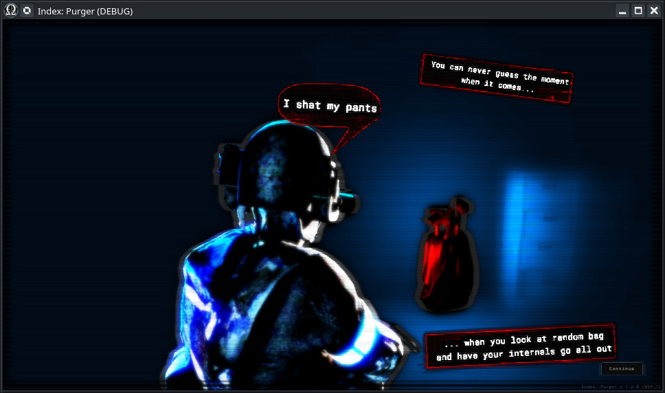
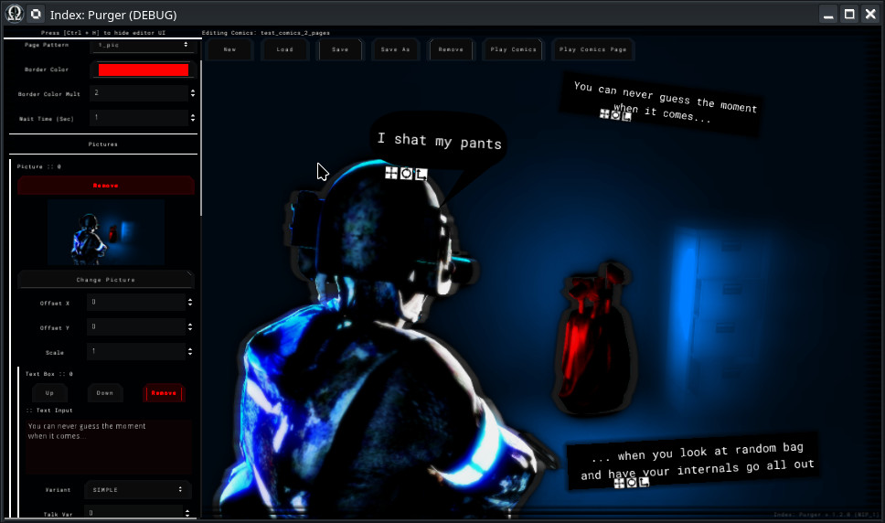
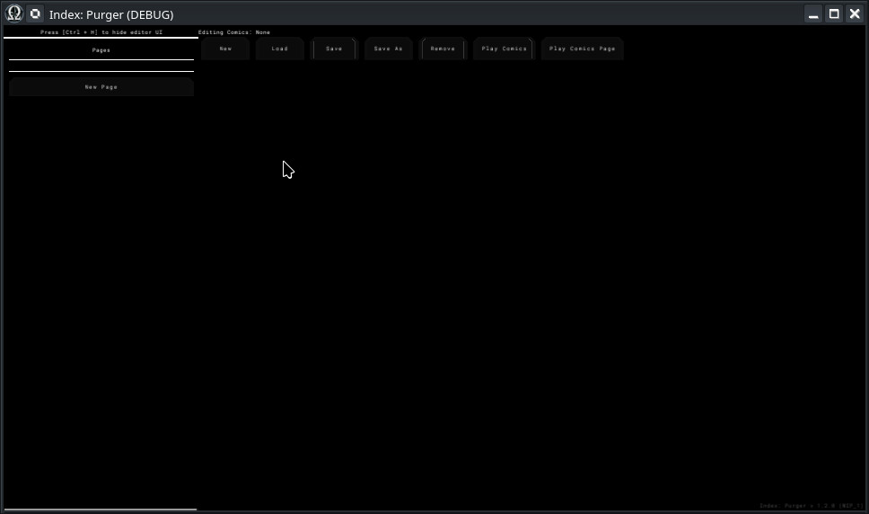
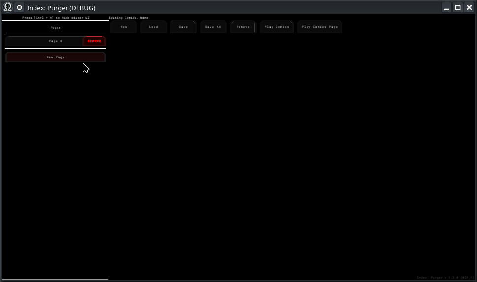
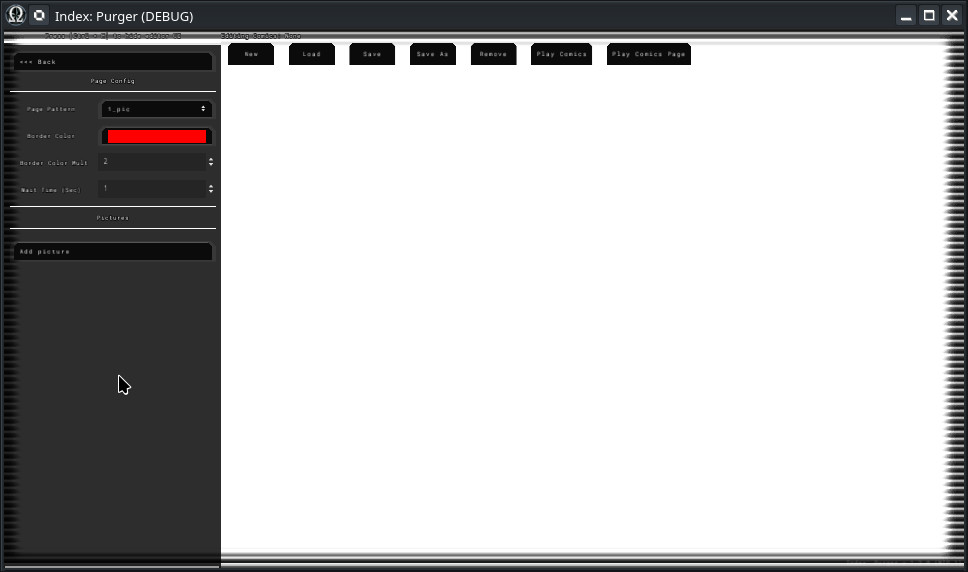
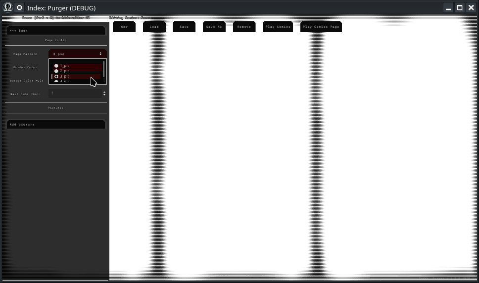
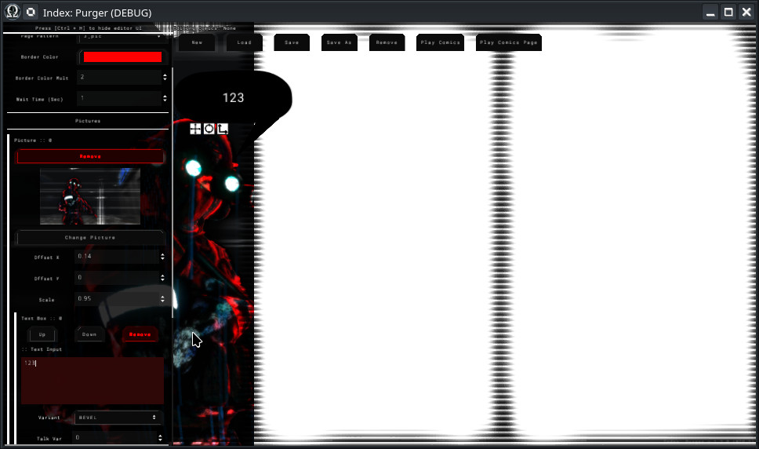
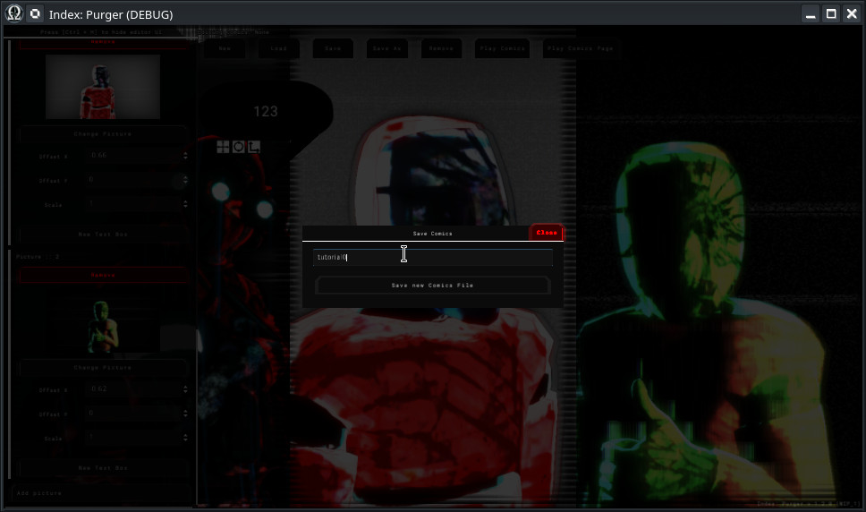
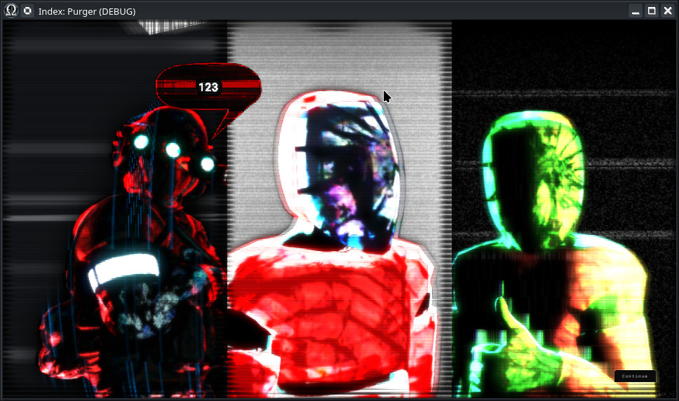

Module: comics_player
Documentation last edited: October 22, 2025 at 10:46 UTC
Description


Плеер комиксов, который поставляется вместе с редактором в локации
"comics_editor"
. Это простой плеер "комиксов", который показывает изображения, текст, рамки, текстовые пузыри, глитч-эффекты и т.д. Изображения, используемые в комиксах, возможно рендерятся в
"comics_renderer"
и могут иметь незначительные регулировки в любом графическом редакторе.
Пример использования
ComicsPlayer.play_comics_by_name("test0")
Имей в виду
ComicsPlayer
не обрабатывает логику управления курсором. Поэтому тебе вероятнее всего будет интересно использовать следующую настройку:
CursorControl.show("comics_player")
ComicsPlayer.play_comics_by_name("test0")
yield(ComicsPlayer, "finished")
CursorControl.deactivate("comics_player")
Техническая сторона
Иерархия скриптов
Основные данные
├── comics_data.gd (Корень)
│ └── comics_page_data.gd (Страницы)
│ └── comics_picture_data.gd (Панели)
│ └── comics_text_box_data.gd (Текст/Аудио)
│
Система редактора
├── comics_editor.gd (Главный UI)
├── editor_comic_control.gd (Рендеринг)
├── editor_relay.gd (Данные ↔ UI)
└── text_box_transform_button.gd (Инструменты редактирования)
│
Система плеера
├── comics_player.gd (Движок воспроизведения)
└── comics_player_test.gd (Тестовый скрипт)
Основные данные
Это данные комиксов. Корень содержит данные о нескольких страницах, страницы содержат данные о шаблоне и его панелях, данные панели содержат информацию о изображениях и текстовых блоках. Достаточно просто, но это вложено ради расширяемости.
Основные данные
├── comics_data.gd (Корень)
│ # Массив страниц
│ └── comics_page_data.gd (Страницы)
│ # Данные страницы, в данном случае, содержат информацию о шаблоне и затем массив изображений, заполняющих этот шаблон
│ └── comics_picture_data.gd (Панели)
│ # Данные изображения, которые имеют данные картинки, а также массив текстовых блоков, привязанных к этой панели
│ └── comics_text_box_data.gd (Текст/Аудио)
│ # Данные текстового блока, содержат информацию о тексте, настройки печатной машинки, конфигурацию голоса/аудио, а также
│ # условия "продолжения" к следующему текстовому блоку. Все текстовые блоки воспроизводятся один
│ # за другим
Система редактора
Редактор *пытается* следовать принципу
"What You See Is What You Get"
, однако он не позволяет видеть все эффекты поверх без полного воспроизведения комикса. Тем не менее, он позволяет быстро настроить все данные комикса и увидеть, как это выглядит. Основные ключевые особенности системы редактора - это неразрушающие рабочие процессы (ты можешь вернуться когда угодно, и исходные файлы остаются нетронутыми) и возможность очень лёгкого предварительного просмотра всех изображений, аудио, позиционирования текстовых блоков, страниц, а также возможность предварительного воспроизведения комикса, чтобы увидеть, как он будет выглядеть в игре.
Система редактора
├── comics_editor.gd (Главный UI)
│ # Мозг редактора, или, по крайней мере, "визуальный" для конечного пользователя.
│ # - Управляет UI панелями, такими как список страниц, селектор изображений, настройки текстовых блоков
│ # - Обрабатывает сохранение/загрузку файлов комиксов, хранящихся в...
│ # res://modules/comics_player/assets/comics/
│ # - Координирует между инструментами редактирования и визуальным превью
├── editor_comic_control.gd (Рендеринг)
│ # Рендерер.
│ # - Берет данные из ComicsPageData и отображает их в реальном времени
│ # - Применяет шейдеры для границ панелей, эффекты изображений
│ # - Обрабатывает шаблоны (1_pic, 2_pic, 3_pic, 4_pic и т.д.)
├── editor_relay.gd (Данные ↔ UI)
│ # "Ретранслятор" между данными комикса и UI
│ # - Соединяет элементы управления UI (такие как текстовые поля) с фактическими данными комикса
│ # - Обновляет текстовые блоки, когда ты печатаешь, меняет стили, когда ты выбираешь один из вариантов, и т.д.
└── text_box_transform_button.gd (Инструменты редактирования)
│ # Позволяет тебе перемещать, вращать и масштабировать текстовые блоки
Система плеера
Система плеера загружает файлы комиксов (.tres) и превращает их в "слайд-шоу" с анимациями, звуками и управлением "щёлкни-для-продолжения". Использует данные, экспортированные системой редактора, для показа игроку.
Система плеера
├── comics_player.gd (Движок воспроизведения)
│ # Сложный скрипт воспроизведения, который имеет следующий алгоритм:
│ # - Загрузка комикса
│ # - Предзагружает изображения, шрифты, аудио, настраивает таймеры/анимации
│ # - Воспроизведение страницы
│ # - Загружает сцену шаблона, размещает изображения там
│ # - Анимирует элементы, fading панели, обрабатывает эффект печатной машинки, воспроизводит аудио
│ # - Ожидание ввода/таймера
│ # - Автоматическое продолжение после задержки ИЛИ нажатие кнопки для продолжения
│ # - Переход к следующей странице, чтобы повторить всё снова или закончить комикс, если не осталось страниц для воспроизведения.
└── comics_player_test.gd (Тестовый скрипт)
│ # Маленький тестовый скрипт, сохранённый на всякий случай :)
Как использовать редактор комиксов
Система проста... Но если ты так безнадёжен и должен прийти сюда, чтобы прочитать всё это... Ну, я полагаю, мне придётся стырить часть твоей оперативной памяти, чтобы показать тебе ~изображения~.
Сначала ты просто переключаешься на локацию
"comics_editor"
с помощью
change_location comics_editor
в консоли или используя
dev_menu


Нажав "New Page", ты создаёшь новую страницу (вау, невероятно)

Нажав на только что созданную страницу под названием "Page 0", ты будешь редактировать конфигурацию этой страницы (супер сложно, я знаю)

Ты можешь изменить шаблон здесь

Ты также можешь добавлять изображения, настраивать их позиционирование, имей в виду - только после добавления изображения ты можешь добавлять текстовые блоки, поскольку они привязаны directly к данному изображению.

Когда ты закончил: Просто сохрани это, в первый раз это потребует от тебя установить имя для файла данных твоего комикса, но затем нажатие кнопки "Save" будет автоматически сохранять его в заданный файл.

Нажав кнопку "Play Comics" - ты сможешь предварительно просмотреть, как твой комикс будет воспроизводиться в игре. "Play Comics" воспроизводит все страницы. "Play Comics Page" воспроизводит только страницу, которую ты сейчас редактируешь.

И я клянусь богом, если у тебя возникнут какие-либо вопросы относительно функциональности этого инструмента редактора даже ПОСЛЕ всех этих изображений...
General Information
Root directories list
assets, docs, src
Nodes
ComicsPlayer
comics_text_layer
comics_player_test
text_box_transform_button
editor_comic_control
comics_editor
editor_relay
Classes
None
Resources
ComicsPictureData
ComicsData
ComicsPageData
ComicsTextBoxData
Other Scripts
None